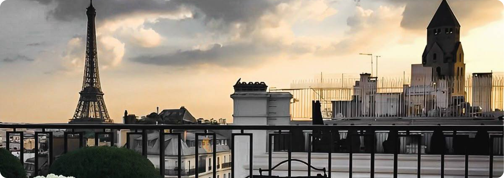
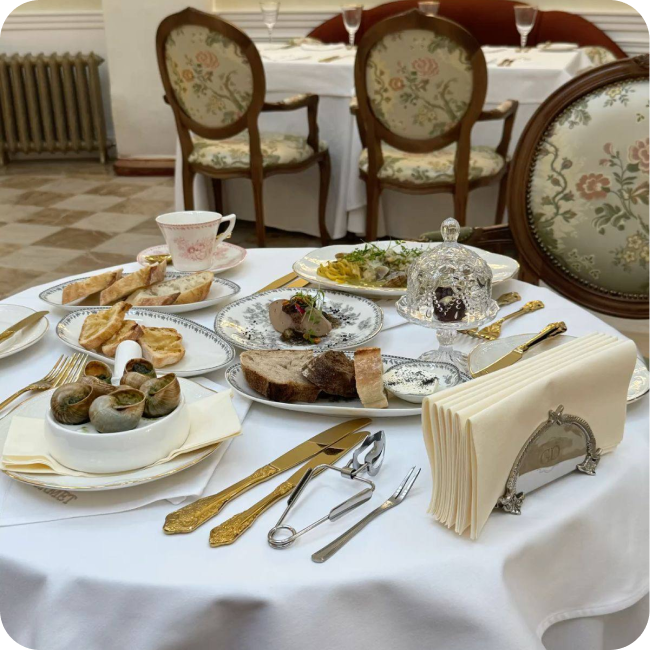
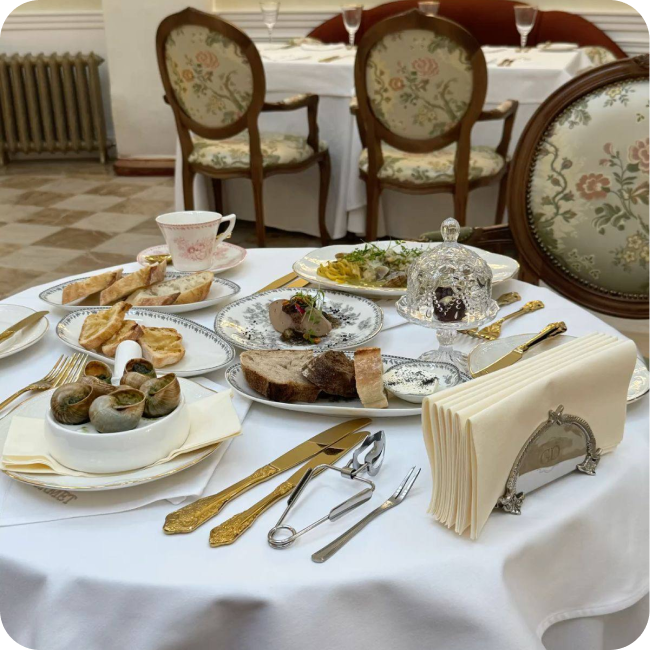

Чтобы найти идеальный вариант пройдите тест

Тур «Рататуй»



Этот тур создан для тех, кто воспринимает Францию через вкус. Вас ждёт погружение в атмосферу парижских ресторанов и уютных бистро, прогулки по узким улочкам, где пахнет свежей выпечкой, и дегустации в винных погребах. Мы познакомим вас с традиционной кухней, научим различать оттенки вкусов и откроем для вас настоящие гастрономические секреты Парижа. От утончённых сыров и хрустящих круассанов до бокала холодной просекко на вечерней террасе — этот тур позволит прочувствовать Францию именно такой, какой её любят гурманы.
От 96 000 руб.
О туреТур «Монстр в Париже»


 

Париж — это не только улицы и кафе, но и настоящая культурная сцена. В этом туре мы собрали всё лучшее для тех, кто хочет увидеть город через оперу, кабаре и театры. Вас ждут яркие постановки, знакомство с легендарными площадками и визиты в знаменитые музеи. Мы проведём вас по культурным маршрутам, где искусство оживает, а каждый вечер наполнен атмосферой вдохновения. «Монстр» — это возможность ощутить дух Парижа с другой стороны: глубже, театральнее, ярче.
От 89 000 руб.
Тур «Эмили в Париже»


Этот тур создан для тех, кто ищет вдохновение и стиль в каждой детали. Париж — мировая столица моды, и мы предлагаем вам прочувствовать это лично. В программе — музеи моды, временные выставки, посещение бутиков и шоу-румов, а также прогулки по знаковым местам, где рождаются тренды. «Эмили» — это история о шопинге не ради покупок, а ради впечатлений: здесь вы вдохнётесь атмосферой модных показов, узнаете о новых именах и почувствуете, почему Париж остаётся сердцем мировой моды.
От 120 000 руб.